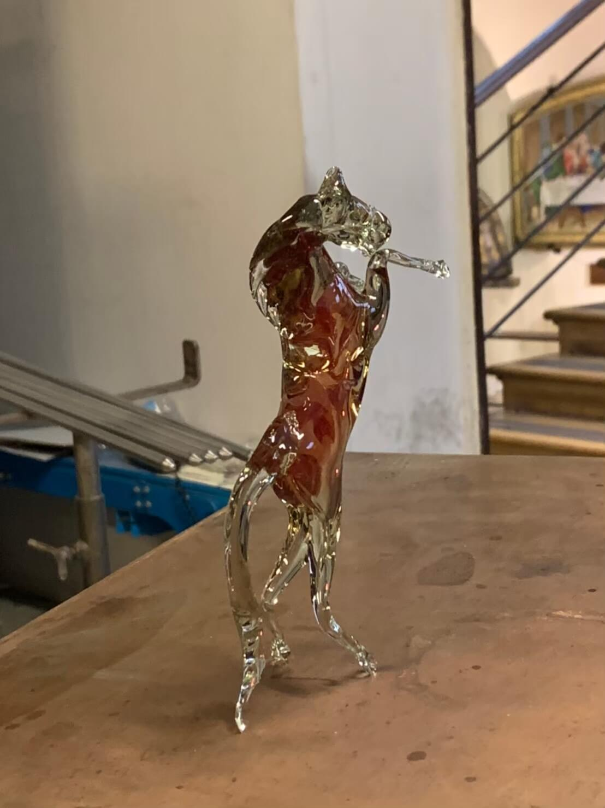

トップページ
制作物
スキルセット
トップページ

kai
アウトプット
X :
https://x.com/pro_learn7
Qiita :
https://qiita.com/kai_163
GitHub :
https://github.com/kai335
「kai」という名前で活動しています。
保有資格 : 基本情報技術者、秘書検定2級
2016年 ~ 2020年 : 飲食店のアルバイト（大学生）
2020年 4月 : 百貨店にてジュエリー販売員（20卒）
2020年 7月 : 休職
2021年 1月 : 退職
2022年 ~ 2025年 : プログラミングの学習・開発
※
休職を含む5年の空白期間があります。
※各詳細は、ヘッダーのメニューからご覧ください。